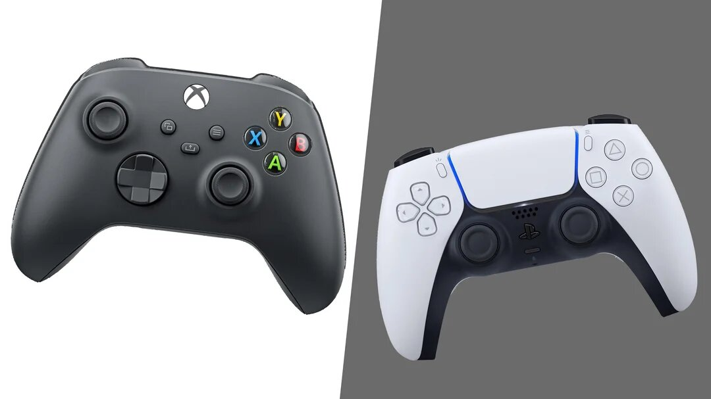

Artigos
Textos curtos sobre o mundo dos games.

Por que jogos de mundo aberto demoram tanto?
06/11/2026
Em um jogo de mundo aberto o jogador pode ir a qualquer lugar, a qualquer hora. Por isso, cada missão, personagem e sistema (trânsito, polícia, clima) precisa funcionar em muitas situações diferentes. Somando cidades cheias de detalhes, diálogos e testes, esses jogos levam anos para ficar prontos, e os estúdios preferem adiar a lançar com erros.
Do Atari ao PS5: uma breve história dos consoles
28/10/2026
O Atari 2600 (1977) popularizou os cartuchos. Nos anos 1990, Mega Drive e Super Nintendo fizeram a primeira grande "guerra de consoles", e no Brasil a Tectoy tornou a Sega muito popular. O PlayStation trouxe o CD e os gráficos 3D, o Wii levou os controles de movimento para as famílias, e hoje PS5 e Xbox Series usam SSDs que quase acabaram com as telas de carregamento.
Jogos indie que fizeram história
24/10/2026
Jogos independentes são feitos por equipes pequenas, às vezes por uma só pessoa. Minecraft, Stardew Valley, Hollow Knight e Hades são exemplos de indies que viraram sucessos mundiais e inspiraram grandes estúdios. Costumam ser baratos e rodar até em computadores simples.
Jogar bem também é cuidar da saúde
17/10/2026
Faça pausas a cada hora, alongue punhos e ombros e beba água. Use a regra 20-20-20: a cada 20 minutos, olhe para algo distante por 20 segundos. E não troque o sono pelo jogo, porque o cansaço piora seus reflexos.